MONO2K on the Ableton Move: the FM-1's Monomachine-style groovebox, on eight tracks, every page one pad away.
HOME: eight lanes, each playhead its own.
It is the same firmware core as the FM-1's, so the same machines, sequencer, PERFORM and bus, and the same sound, sample for sample. The Move gives it eight tracks, its 32 pads, 16 steps, 8 touch knobs and a screen of its own.
It runs on Schwung as an overtake module: while it is open, MONO2K owns the pads, the steps, the knobs and the screen; Move's own sets keep playing beside it.
0.2, the first release: from Schwung Manager or the install page.
MONO2K for the Move is not public yet: the install page says how it installs once it is. It runs on Schwung, which is unofficial: not made, approved or supported by Ableton. Back up your sets before installing Schwung or anything on it.
MONO2K never touches Move's sets. Its own patterns are kept in one file, apart from Move's (Saving).
Note
MONO2K is not affiliated with Ableton, M-VAVE or Elektron. Move is Ableton's; Monomachine is Elektron's. Its machines are written from scratch and measured against a Monomachine's output.
Getting in and out
Schwung's Tools menu opens it; Back parks it; Shift + Back closes it.
Do
Press
Open
Shift + touch the volume knob + step 13: Schwung's Tools. Then Overtake Modules, MONO2K.
Park
Back. Move is back; MONO2K plays on behind it, in time.
Return
Tools again (Shift + volume touch + step 13, twice), or Shift + a long press on step 13: the last parked tool comes back.
Close
Shift + Back. MONO2K saves and stops.
Escape
Shift + volume touch + jog click: back to Move, always.
Before installing a new MONO2K, close the open one with Shift + Back: a parked MONO2K keeps the old one loaded.
The pads
The top two rows are the pages, the bottom two the keyboard, the steps the sequencer.
The pads as MONO2K lights them: HOME in view; keys held on TRK; PADS; PERFORM on.
Row
Pads
Top
The sound of the track in view: SYN AMP FILT EFX DSTR LFO1 LFO2 LFO3. Orange.
Second
HOME TRK PAT GRID MIX GLO in azure; SOUNDS and PERFORM, the two functions, in magenta.
Third
The black keys: C# D# · F# G# A# · ·
Bottom
The white keys: C D E F G A B C
Steps
The sequencer, on every page.
The page in view is lit bright, the others dim. On the keys the root is lit orange and the notes played white, by hand or by the sequencer; a pad no key has stays dark. With PERFORM on, the keys are its effects (PERFORM).
PADS: every track on one row
Press Sample: the bottom row plays the eight tracks, each at its own note (its trigs' most common), and the row above mutes them (at the bar when GLO says so; a mute waiting blinks). Sample again: the piano. REC records each hit into its own track. A small mark in the header while PADS is on.
Capture
MONO2K always listens to what you play on the keys, REC or not. Press Capture and the last whole bars you played go into the steps: while playing, each note on the bar and step it fell on; stopped, your first note becomes bar 1. It adds to what is there, never more than the track's length; in PADS every track gets its own hits. One Undo takes it all back.
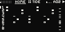
PADS on: its mark in the header.
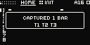
Capture: the bars taken, and where.
Every control
What each of the Move's controls does under MONO2K.
Knobs and jog
Knobs 1–8
The page's eight parameters. A touch or a turn shows the knob's full name and its value large. Two detents a value; a flick moves faster; a short list, 3.5 detents an option.
TRCK · DEST · WAVE · TRIG · MULT · SPD · PHAS · DPTH
HOME
LEVL · PTCH · BPM · SWNG · TLEN · SPD · PROB · LANE
TRK
PTCH · LEVL · MODE · SPD · RNG · GATE · BANK (DIGI-WAV's wave bank)
PAT
BPM · SWNG · LEN · ACNT · TLEN · SPD · PROB · LANE
GRID
X · Y · CHAOS · RES · BD · SD · HH · LANE
MIX
The eight tracks' levels, a knob a track
GLO
DCAY · DAMP · ADPC · DRIV · MUTE (at the bar, or at once)
PERFORM
DCAY · DAMP · ADPC · DRIV
SYN to LFO3 and TRK are the track's. TRK holds the arp (the FM-1's ARP). PAT is the pattern's time and the track's own length, speed, chance and lane (the FM-1's HOME 2). HOME is the FM-1's HOME 1 and 2 on one page. GLO is the bus. The FM-1's MIDI settings have no page here: the Move routes no MIDI to them.
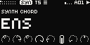
SYN: the machine's kind and name, A–H as pictures.
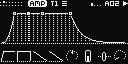
AMP: the envelope, live.
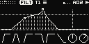
FILT: the response, live; the envelope's reach dotted.
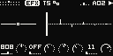
EFX: the EQ's band; the echoes, ping-pong.
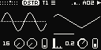
DSTR: a sine through the crush; the modulation.
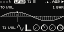
LFO2: its wave as deep as it swings.
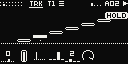
TRK: the arp's notes, HOLD on.
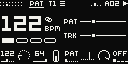
PAT: the tempo, the bar, the lengths.
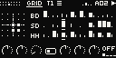
GRID: Grids' map and its three lanes.MIX: eight levels, live.
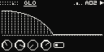
GLO: the bus, the reverb's tail.
Tracks and machines
Eight tracks, each one mono machine with its own sound, chain and steps.
The track buttons pick tracks 1–4; Shift + a button, 5–8. Every page shows the track in view. Shift + jog changes its machine; SOUNDS puts a sound from the library on it (SOUNDS).
The machines, their INIT sounds, the chain after each (amp, filters, EQ, distortion, delay, the bits, fold and XOR) and the three LFOs are the FM-1's: its manual has them in full. An FX machine works on the track before it, as on the FM-1.
Patterns from the FM-1 have six tracks: on the Move, tracks 7 and 8 start empty.
Machine reference
The FM-1's nineteen machines in eight families, on any of the eight tracks. Each has eight knobs, A–H: SYN's knobs 1–8.
Loading the machines from the firmware…
Steps and locks
The 16 steps are the sequencer on every page.
A step
Places a trig; a quick tap on a trig takes it away.
Hold + a knob
A parameter lock on that step.
Hold + jog
The step's note.
Hold + Shift + jog
Its condition: a chance of 100 90 75 60 50 40 33 25 12 or 10 %, then A:B, 1ST, PRE and FILL. Hold the step first: Shift first picks a pattern.
Hold + Up / Down
Its ratchet.
Held a moment
The screen shows the step: its condition, note and ratchet, each over what turns it. Hold several and they change together; the first is the one shown.
Held a moment + a later empty step
The note lasts to that step, up to 8 steps: LEN on the screen, the steps it lasts over dim. A nearer step shortens it; the same last step again gives the sound's own length back. The next trig on the track still cuts it.
Rec
Live record: the keys, and knobs as locks on the step playing. A key hit hard (velocity over 110) records an accent.
Copy and delete
Copy held
A step, then other steps: pasted there. A track button, then another: its steps and sound. Shift + a step (a pattern), then another: the pattern. Steps held when Copy is pressed are the source.
Delete held
A step: its trig away. A track button: its steps cleared. Shift + a step: that pattern's steps cleared. A knob: the held step's lock away, else the value back to its INIT. Steps held when Delete is pressed: their locks cleared.
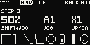
A step held: its condition, note and ratchet, each over what turns it.
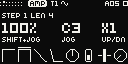
A later step tapped: the note's length, LEN 4.
A step's condition is its own. PROB (knob 7 on HOME and PAT) is the whole track's chance, on top of it: at 50 % there, a step at 50 % plays one time in four.
The conditions, ratchets, trig types, Grids' lanes and each track's own length, speed and chance are the FM-1's: see its manual.
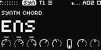
A step held: its locks marked over their knobs.
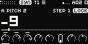
A locked knob touched: STEP 1, LOCK.
Patterns
Four banks of 16; Shift + a step picks one.
Shift + a step
The bank's 16 patterns: at the bar's end while playing; again before it, at once.
Shift + Left / Right
The bank, A–D.
Jog
The patterns' list, open at the one playing; a click loads the one under the cursor (at the bar's end while playing, a second click at once). Left alone 3 s, it closes.
Left / Right
The bars of a pattern longer than 16 steps.
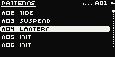
The jog turned: the patterns.
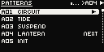
A04 queued for the bar's end: NEXT.
Bank A
The FM-1's four demos, A05–A16 blank.
PERFORM
Its pad turns the keys into the bus's effects: colours that stack over moves that take turns.
Row
Keys, left to right
Top: colours
LPF · DUB · HPF · GATE · CRUSH · DRIVE · WOW · SHIMMER. Held with anything; they stack.
Bottom: moves
RPT 1/4 · RPT 1/8 · RPT 1/16 · RPT 1/32 · ROLL · STUTTER · REVERSE · STOP. One at a time: the next takes over.
Up: moves 2
FREEZE · SCATTER · OCT DN · OCT UP · SPIN · KILL. Down: back. The colours stay.
Each column is a pair that plays together. PERFORM stays on across pages; its pad again gives the keyboard back. Its page's knobs are the bus's four: DCAY, DAMP, ADPC, DRIV.
RPT 1/8 held: named, its key lit.
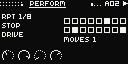
Three at once.
SOUNDS
The library's 96 sounds, a pad away: the FM-1's catalogue.
SOUNDS pad
Opens the catalogue on the track in view.
Jog, or knob 1
Each sound landed on is put on the track and heard.
Knob 2
A category.
Jog click, or Up
Keeps it (undoable).
The pad again, Menu or Down
The track's own sound back, as it was.
The library, the one heard lit.Knob 2: a category.
Tempo, SYNC, INT and Link
In time with the Move: one Play starts both, at Move's tempo.
SYNC: Move's tempo
Play goes to Move, and Move starts and stops MONO2K, locked to its bar. Following goes on while MONO2K is parked; if Move is already playing when MONO2K opens, MONO2K joins at Move's next start.
The tempo from MONO2K
Shift + knob 1 on any page (PAT's knob 1 and HOME's knob 3 too) shows the tempo large: a tenth of a BPM turned slowly, whole BPM turned fast. MONO2K moves at once and asks Move to follow; when Move reaches it, MONO2K locks to Move's bar again, without a jump. Delete + the tempo knob: Move's tempo again.
INT: MONO2K alone
If Move doesn't follow within 2.5 s, MONO2K plays on alone at its own tempo: INT in the header, and a moment's MOVE: LINK OFF. With no clock from Move at all, Play still starts MONO2K on its own. A change of Move's tempo, or Delete + the knob, brings SYNC back.
Shift + knob 1: the tempo, SYNC.
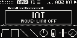
Move didn't follow: INT.
To let MONO2K set Move's tempo
Turn Link on in Move's settings.
In Schwung's Global Settings, Audio, turn Move->Schwung on.
Keep Move alone in its Link session: with Live or another peer on the network, the tempo isn't passed on.
Its cost
Move->Schwung rebuilds Move's own tracks from Link Audio streams: they sound some 16–29 ms later than MONO2K, Move's metronome and speaker EQ are replaced, and a busy Move can drop out. Without it, MONO2K follows Move's tempo and sets its own under INT.
Saving
Shift + Rec saves; closing saves too.
Shift + Rec
Saves: the open pattern's reload point first, then everything, as the FM-1's SAVE.
Shift + Back
Closes MONO2K and saves.
A setting
Saved once it stands.
Everything is in one file, /data/UserData/schwung/mono2k/mono2k.m2ks: the patterns, the kits, the settings, the projects and the sound library. It sits outside the module's folder, so an update keeps it. A file MONO2K can't read is kept as mono2k.m2ks.bad, and the factory's patterns play.
The Patch Editor is the FM-1's for now: it edits six tracks.
Credits and licence
Free software, on Schwung.
MONO2K is by Sequencist, and free software under the GNU General Public License, version 3 only. Its source and this site are on GitHub.
On the Move it runs on Schwung (MIT), an unofficial framework for Move's modules, not made, approved or supported by Ableton. Type: Elektron Pixel Font by savingaurora (FontStruct), CC BY-SA 3.0; MONO2K's adaptation is under CC BY-SA 4.0. Orbitron (the wordmark) and Inter Tight are under the SIL Open Font License. GRIDS is Émilie Gillet's Grids (Mutable Instruments), its map and rules ported from its source (GPL-3.0). The DRM- drums' voice design is after the Erica Synths LXR drum voices (GPL-3.0-only; originally Julian Schmidt's Sonic Potions LXR): their laws, not their code or samples. The digital waves are the author's own.
The machines were measured against a Monomachine: the FM-1 manual's credits say how. Ableton and Move are trademarks of Ableton; Monomachine and Machinedrum of Elektron; M-VAVE and FM-1 of their owners. MONO2K is not affiliated with Ableton, M-VAVE or Elektron. If it is useful to you, you can support it on Ko-fi.
Change log
What each update of the Move version brought, newest first. The FM-1's is in its manual.